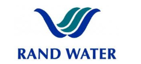
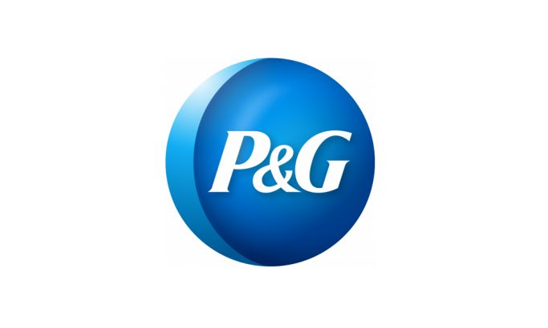
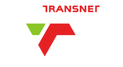
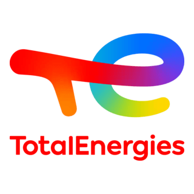
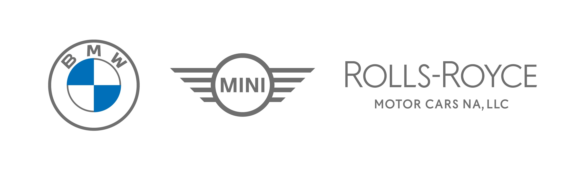
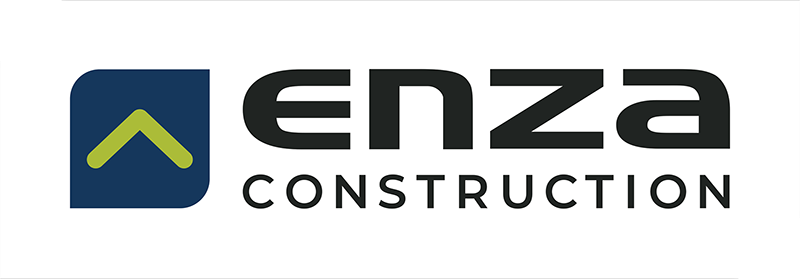
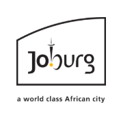
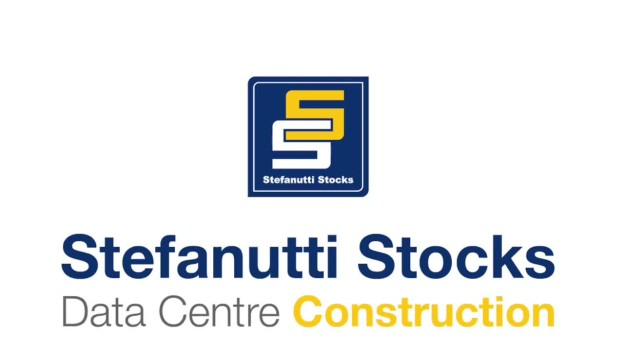
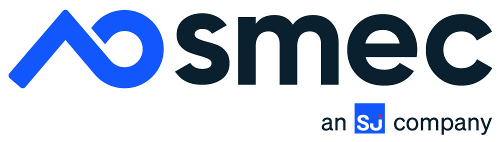

Graduate Programmes
Explore graduate development programmes available to Engineering and Built Environment students. Opportunities are updated regularly as applications open.
Last Updated: July 2026
Engineering Opportunities
Schneider Electric 2027 Graduate Programme
Schneider Electric's graduate internship programme offers structured technical training for engineering graduates.
Apply NowRiotinto RBM Graduate Programme 2027
Riotinto RBM is offering a structured graduate development programme with exposure to multidisciplinary mining and engineering projects.
Apply NowEskom Engineer-in-Training
Eskom's Engineer-in-Training programme develops graduate engineers through structured technical and operational experience.
Apply Now
Rand Water Automation Technologist
Opportunity to work within one of South Africa's leading water utilities.
Apply Now
P&G Manufacturing Process Engineer
Graduate opportunity in manufacturing engineering with exposure to world-class production systems.
Apply Now
Hatch Graduate Programme 2026
Hatch's graduate programme is designed to develop future technology and engineering leaders. African International students are also encouraged to apply.
Apply NowVodacom Discover Graduate Programme
Vodacom's Discover graduate programme is designed to develop future technology and engineering leaders. African International students are also encouraged to apply.
Apply Now
Sappi Graduate Programme
Sappi's graduate programme is designed to develop future technology and engineering leaders. African International students are also encouraged to apply.
Apply Now
Transnet Young Professional-in-Training
Structured graduate development programme offering practical engineering experience across Transnet's operations.
Apply NowAnglo American Graduate Programme
Develop your career through technical rotations, mentorship and leadership development within one of the world's largest mining companies, Anglo America.
Apply NowCapitec Graduate Development Programme
The Capitec graduate programme is designed for future innovators in technology, analytics and digital engineering.
Apply Now
TotalEnergies Young Graduate Programme
Total Energies is offering an international graduate programme that is providing technical development and exposure within the energy industry.
Apply NowNedbank Graduate Programme
The Nedbank Graduate programme is focused on innovation, digital transformation and leadership development.
Apply NowMercedes-Benz South Africa Graduate Development Programme
Join Mercedes-Benz South Africa and gain exposure to world-class automotive manufacturing and engineering operations.
Apply NowABB South Africa Graduate Programme
ABB is offering an opportunity for graduates to work alongside industry experts in delivering innovative automation, robotics and electrification solutions.
Apply Now
BMW South Africa Graduate Programme
Gain practical experience within BMW South Africa's production, manufacturing and engineering divisions.
Apply NowBuilt Environment Opportunities

Enza Construction Graduate Programme (Quantity Surveyor)
Enza Construction is offering a structured graduate development programme with exposure to multidisciplinary consulting and infrastructure projects.
Apply Now
City of Johannesburg Internship Programme
The City of Johannesburg is offering a structured internship programme for Built Environment students with exposure to multidisciplinary consulting and infrastructure projects.
Apply Now
WBHO Graduate Programme
Join one of South Africa's & Africa's leading construction companies, WBHO and gain practical experience on major infrastructure projects.
Apply NowAnglo American Graduate Programme
Develop your career through technical rotations, mentorship and leadership development within one of the world's largest mining companies, Anglo America.
Apply Now
stefanuttistocks Graduate Programme
stefanuttistocks is offering a structured graduate development programme with exposure to multidisciplinary consulting and infrastructure projects.
Apply NowAurecon Graduate Programme
Gain experience working alongside multidisciplinary consulting engineers on local and international projects under the Aurecon graduate programme.
Apply Now
SMEC South Africa Graduate Programme
SMEC offers a graduate programme opportunity focusing on transportation, water, infrastructure and consulting engineering.
Apply NowGIBB Graduate Programme
GIBB is offering a structured graduate development programme with exposure to multidisciplinary consulting and infrastructure projects.
Apply NowFor more information on the graduate programmes, please visit the respective websites.